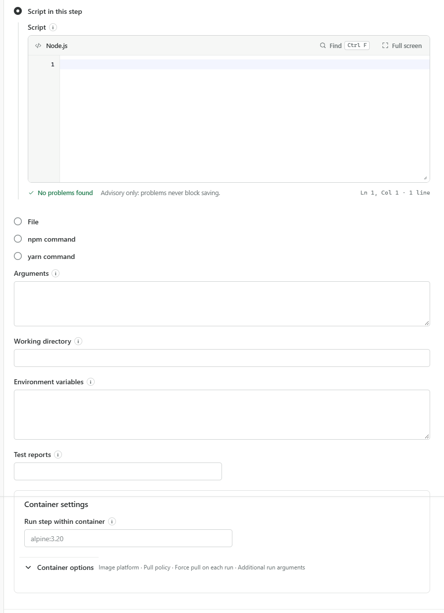

Node.js
Runs a JavaScript file or script with node, or an npm or yarn command.
When to use it
Use it for web tools in your pipeline: a launcher website, an asset pipeline, or a script that talks to a store API. The agent needs Node.js.
How to set it up
- Open the build configuration and click Settings › Build Steps.
- Click Add build step. Type
Node.jsin Filter step types if you like, then click the Node.js tile (group Build tools). - Type a Step name, for example
Build site. - Fill in the fields described below.
- Optional: set Execute step, Conditions and Retry on failure. See The steps list and the step editor.
- Click Save.

Every field
| Field | What it does | Default | Example |
|---|---|---|---|
| Run | Script in this step, File, npm command or yarn command. | Script in this step | npm command |
| Script | JavaScript in a code editor. %name% is replaced with that build parameter. | Empty | console.log(process.version) |
| Script file | Relative to the working directory. | Empty | tools/notify.js |
| Arguments | One argument per line. For a script or file they go to the script. For npm and yarn this is the command and what follows it, such as run on one line and build on the next. Pass a secret through the environment. | Empty | run then build |
| Working directory, Environment variables, Test reports, Run step within container | The same in every runner. See Fields every runner has. |
A worked example
Build the studio's patch-notes site. Step name Build site, Run = npm command, Working directory site, Arguments:
ciAdd a second step with arguments run and build.
What you see when it runs
The console shows $ npm ci and then the npm output. A failing npm command fails the step with its exit code.
Problems and fixes
| Problem | What to do |
|---|---|
| npm was not found on this agent (or node, yarn) | Install Node.js there or put the command on the PATH. |
| The Node.js step has no npm or yarn command | Put the command in Arguments, for example install. |
| The Node.js step has no script / no script file | Fill in the field for the mode you chose. |